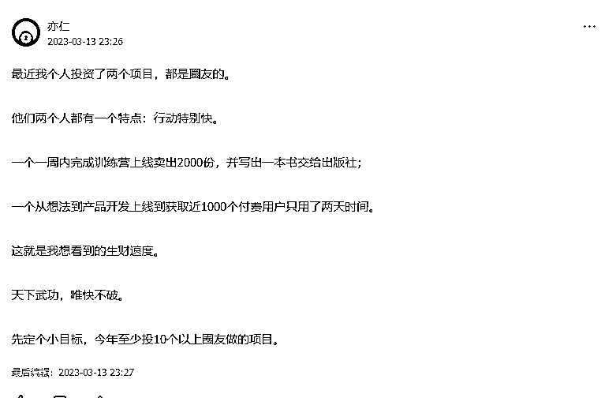
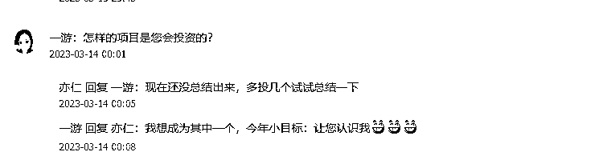
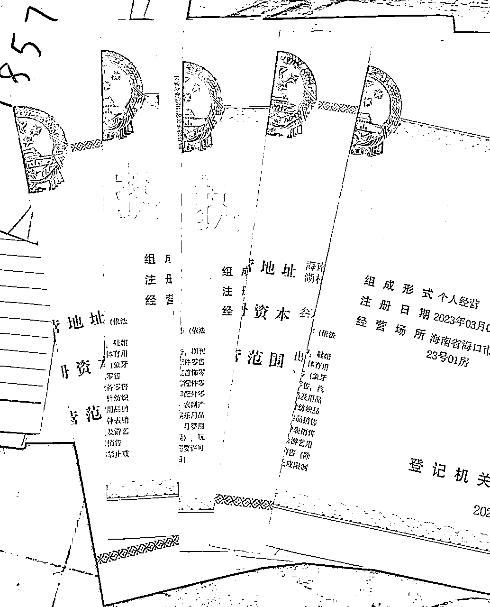
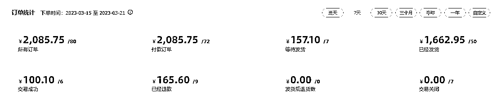
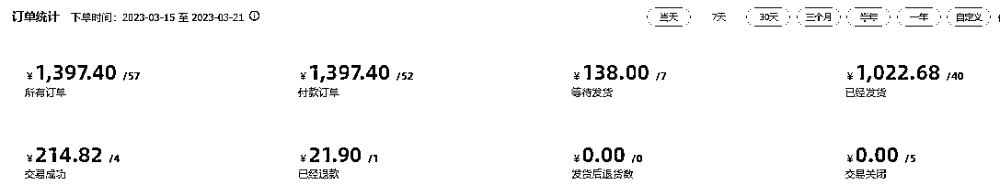

来源：https://gik6yjl7o7e.feishu.cn/docx/Tjjyd0KpcoxG9nxhob9c3LKWnwb
大家好，我是小游，一个在深圳卖二手书的潮汕妹子
去年，我花了2千多，进了生财，虽然告诉自己一定要把门票赚回来，但最后还是失败了，生财琳琅满目的项目，让我产生错觉，觉得自己也可以跟大佬们一样，随便操作一个项目，就能年入千万百万，结果，每次都是给亦仁大佬做贡献，没有一次参加航海能顺利下车的，一旦某个节点跟不上打卡节奏，内心绝不愿意在继续航海下去了。
本来，今年的续费，我是没想要参加的，因为我觉得，看到那么多项目，我越发觉得自己一事无成，哪怕是今年亦仁大佬大放福利，我都决定捍卫自己的荷包，不给亦仁大佬再让我身上赚一毛钱（虽然，打脸了）
当我看到亦仁大佬发布了一条信息，我下定决心，我不能让自己去年两千多的费用白花，必须让亦仁大佬知道我的存在


虽然，当时我并没有想到什么办法，但心里已经有这样的愿景，直到我看到闲鱼的二手图书入口开放了，我知道，这应该能成为我在生财的第一篇文章，目的很明确，让自己的生财冒个小泡，看看能不能引起大佬的注意
之前，我一直都是做二手绝版书，赚的钱比上班多一点，虽然有想过复制扩大，总能被一些小困难打倒，所以做得也就一般般
今年，闲鱼的图书入口打开后，我厚着脸皮让家里所有人都给我注册了营业执照和出版许可证。

目前一共有6张执照，一个执照可以完成三个闲鱼店铺的认证，目前，我一共有18个闲鱼店铺，做得是二手图书无货源模式
无货源能够大大减少我的创业成本，这种模式的优点是可以灵活地根据市场需求来调整进货量和品种，但是也存在一些风险，如无法保证货源的质量和数量，以及可能面临竞争对手的价格战等问题。因此，需要有一定的市场敏感度和风险控制能力才能在这种模式下运营。
我的操作模式，跟星球里#小嵩的模式是差不多的，但我的模式相对粗暴，直接批量上品，广撒网。
一般来说，一个闲鱼店铺可以上传500个品
今年赶上开学季，闲鱼为了鼓励商家上品，开启了图书发布上限从500开通至最多3000的活动
从活动开始到截止，利用黑科技，我完成了10个账号的扩容，也就说，现在有10个账号能够发布3000本图书，8个账号能发布500图书。
目前所有账号都慢慢开始盈利
这是其中两个店铺7天的营业数据，利润在30-40%之间


也许，对各位大佬来说，这并不是什么大的成绩，但这是我想要进步，想要变得优秀，踏出的第一步。
所以啊，亦仁大佬，您看到我写的文章了么？
虽然您不认识我，但您创造的星球，无意中的话或行为激励了我，让我感到有了动力去追求我的梦想，克服困难，变得更加坚强。十分感谢您，您的存给了我一种勇气和动力，让我更加自信地面对人生的挑战。
今天的文章有点水，后续我都会持续输出关于二手书的文章，希望在7年内成为这个领域的专家。
也欢迎各位同行来交流，大家一起生财